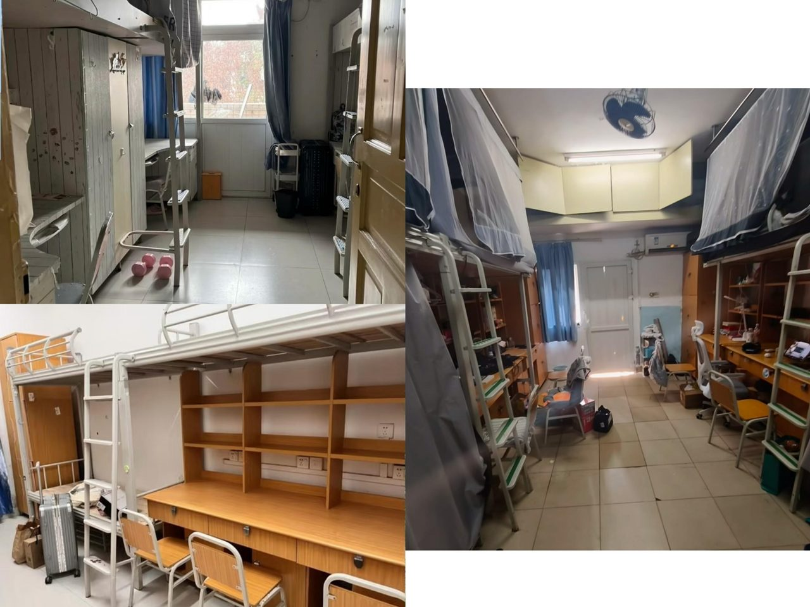
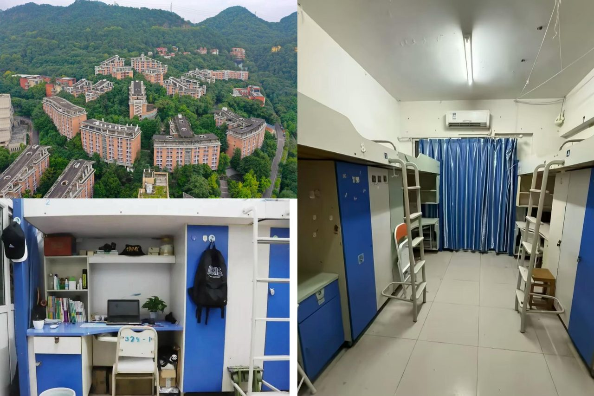
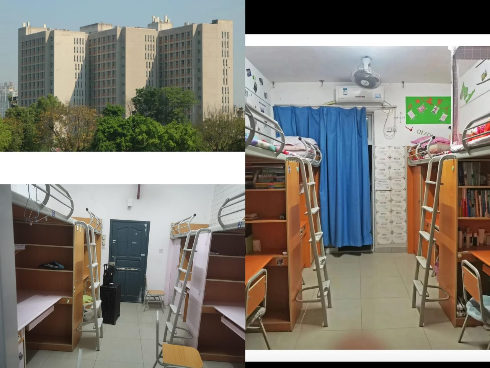
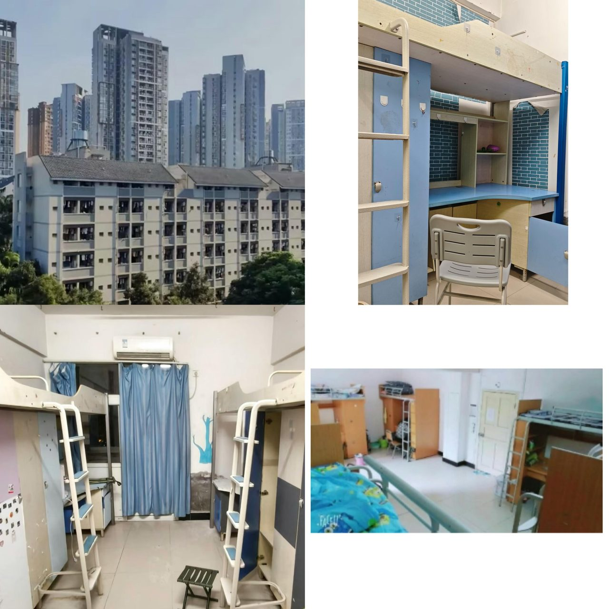
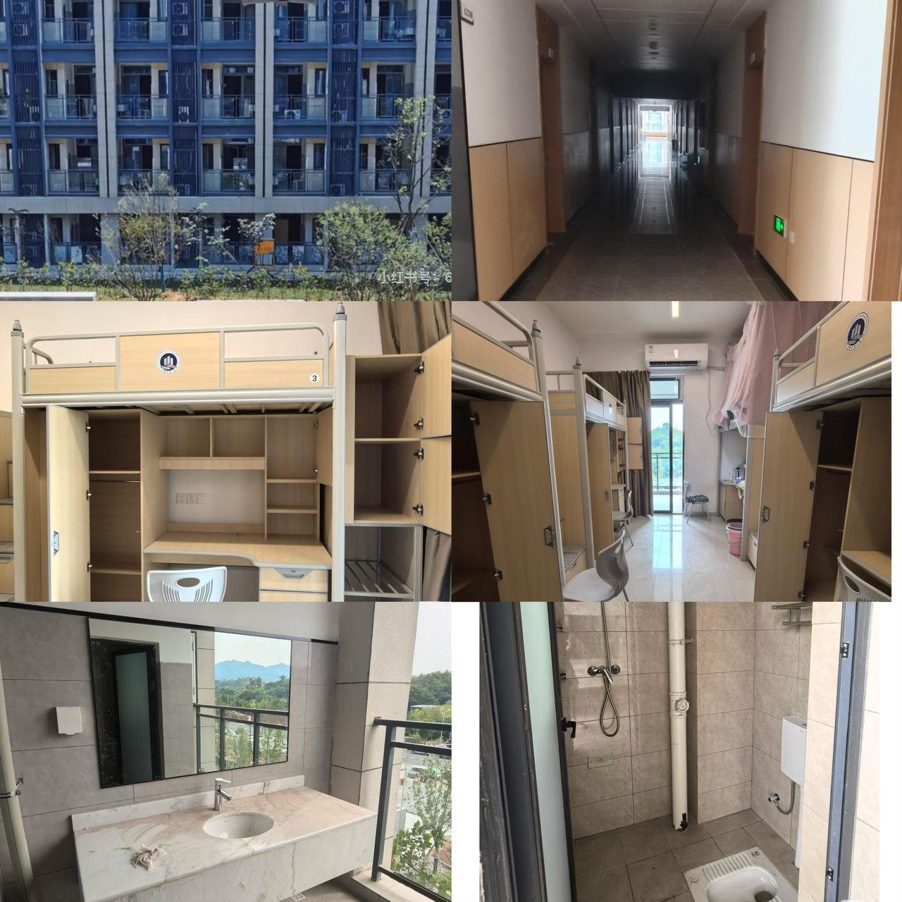

选寝室这件事，学姐先说大实话
新生不用选寝室，学院按性别 + 校区统一分配。但提前了解各片区特点，你能做好心理准备——尤其是南岸的南区老楼 vs 新北区公主楼，体验差别不小。
一、南岸主校区（南区 / 北区 / 新北区）
南岸校区宿舍分三大片区，全部公寓式管理，标配空调、阳台、热水，楼栋配备洗衣房、直饮水、快递驿站。
1. 南区宿舍（工商 CBD，校内最便利）
房型与收费
- 老楼栋（南 1-9）：5/6 人间，上下铺，无独立卫浴，每层公共澡堂卫生间（翻修中），800 元/年
- 新楼栋（南 10-16）：标准 4 人间，上床下桌、独立卫浴、外置阳台，储物空间充足，靠近翠园、菊园食堂，教学楼步行 3 分钟，1200 元/年
区位优势：紧邻 7 教博智楼、图书馆、主食堂、翠湖、运动场，步行 3-8 分钟到绝大多数教学楼。下楼就是超市、打印店、奶茶店。
特点：楼栋新旧混杂，人流量大；老楼设施偏老旧，新楼条件较好；大二抽签分配，是校内通勤最优片区。

2. 北区宿舍（山间公寓，全四人间）
房型与收费：全楼栋统一 4 人间上床下桌，独立卫浴、阳台，1200 元/年，无五/六人间。
区位优势：依山分布，靠近十二教涵智楼、筱园食堂、北区运动场，上通识课、体育课极近；远离主干道，环境安静，自习氛围好。
特点：无电梯，高层楼栋（北 20、21 俗称"工商之巅"）爬坡费力；绿化茂密，视野开阔；男女楼栋分区，楼栋间距宽敞。
3. 新北区（公主楼，女生专属电梯房）
房型与收费：仅限女生入住，4 人间上床下桌，独立卫浴、大阳台，三栋楼互通，小高层带电梯，1200 元/年。
区位优势：步行至北门仅需 3 分钟，点外卖极为便利；后门直达 3 号线四公里轻轨站，校外出行最方便；校内有小飞车往返教学区。
特点：硬件最新，电梯直达高层，收纳空间充足，刷脸门禁，安保严格。唯一缺点：距离主教学楼、图书馆较远，爬坡距离长。


二、兰花湖校区（大一经管/艺术生片区）
整体花园式公寓，仅大一一年入住，次年搬南岸主校区，整体硬件均衡无老破楼栋。
房型与室内配置
- 主流房型：标准 4 人间，上床下桌布局，独立衣柜、置物架，带独立阳台、独立卫浴，24 小时热水，全屋配备空调+风扇
- 特殊房型：兰 3 圆弧楼栋设有超大 6 人间，空间更宽敞
楼栋公共配套
- 无电梯，楼栋楼层不高，上下楼轻松；每层配备扫码洗衣机、直饮水设备
- 楼下完整配套：小型商业街、菜鸟驿站、便利店、打印店、奶茶餐饮，生活需求一站式满足
- 24 小时宿管值守，人脸识别门禁，晚间统一门禁管理
区位核心优势
- 上课零爬坡：宿舍区与广智楼、兰花湖图书馆步行 3-5 分钟，整片校区地势平坦
- 通勤便利：距离南岸主校区仅 10 分钟步行路程，校内接驳小巴往返两校区；临近 3 号线五公里轻轨站
- 环境安静宜居：绿化覆盖率高，楼栋间距开阔，远离主干道车流噪音
- 餐饮就近：楼下即是兰园食堂，三餐就餐无需走远

三、茶园校区（工科新校区）
茶园校区 2025 年 9 月正式启用，全新智慧校区，宿舍硬件为全校顶配，仅人工智能、机械、环境、食品四大工科学院学生入住。
房型与室内配置
- 统一标准 4 人间，上床下桌布局，每人独立书桌、大容量分层衣柜、多层置物架，上床带储物阶梯；全屋落地窗，山景采光好
- 独立阳台+独立卫浴，24 小时恒温热水，外置洗漱台；空调+风扇双配置，插座充足
- 全屋全新家具，无老旧磨损，收纳空间充足
楼栋公共配套
- 全楼栋配备电梯，无需爬高层；入口刷脸智能门禁，安保管理严格
- 每层公共区域：洗烘一体机、直饮水设备、公共休闲自习区，扫码付费使用
- 楼下设快递驿站、自动售货机、垃圾分类点，楼栋走廊宽敞明亮
区位核心优势
- 宿舍区集中连片，距离教学楼、体育馆、拾光食集食堂步行 5 分钟内，校区地势平坦无爬坡
- 背靠南山，绿化覆盖率高，环境安静，远离校外车流噪音
- 校内通勤巴士直达南岸主校区，校外接驳轨道交通 6 号线

学姐碎碎念
不管分到哪个片区，空调、热水、洗衣机这些都是标配的。南岸南区虽然老楼旧一点，但下楼就是CBD，生活便利度无敌；新北区虽然是"公主楼"但离教学楼远；兰花湖大一住一年很舒服；茶园全新顶配不用多说。心态放平，寝室只是睡觉的地方，大学精彩在教室和操场～